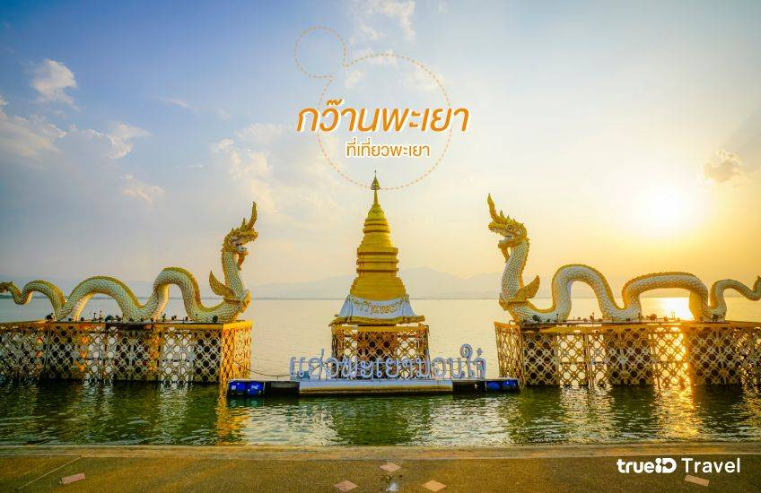
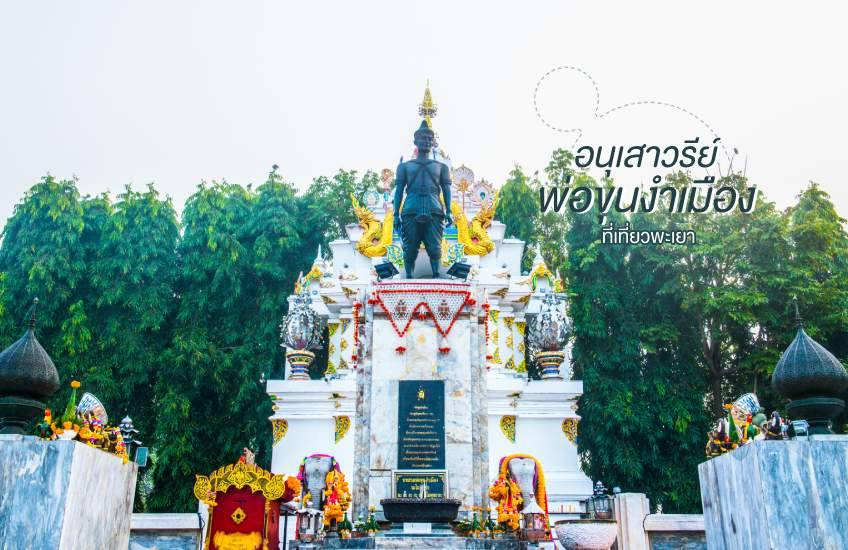
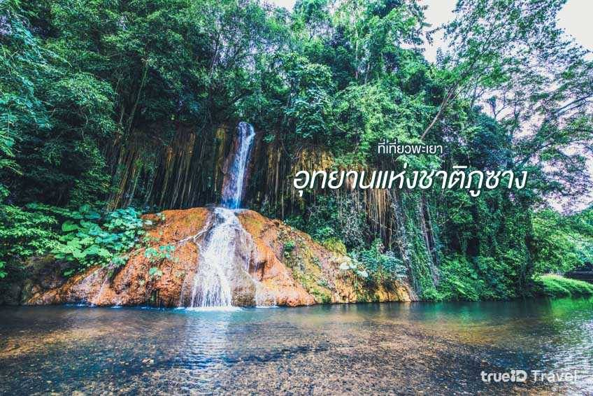
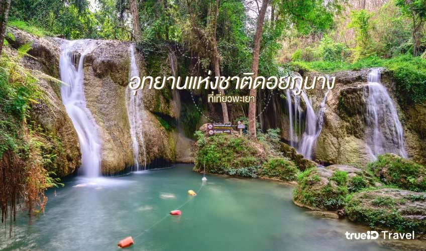
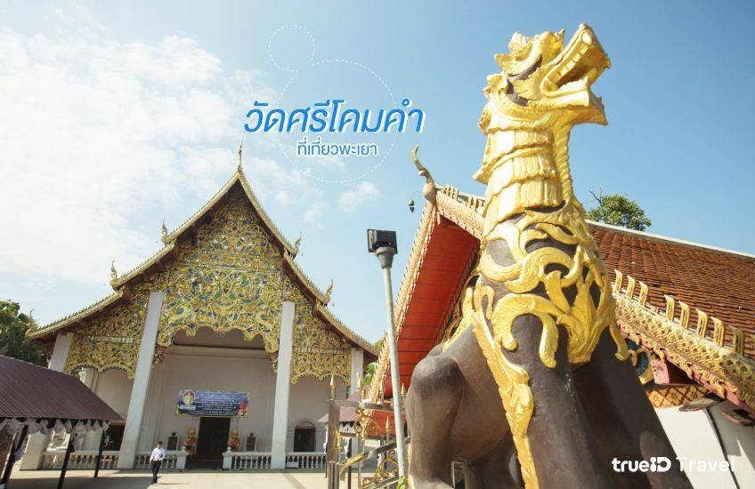
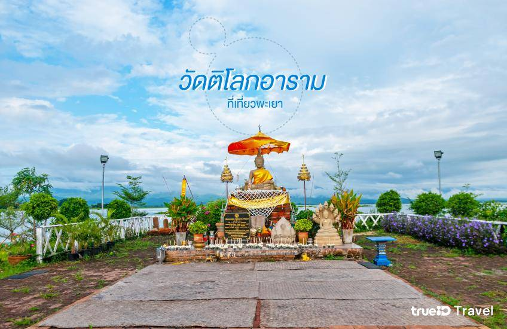
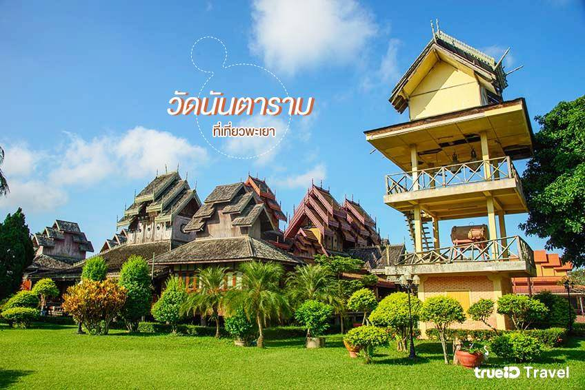

อัพเดตที่เที่ยวพะเยา วัดสวย ธรรมชาติสุดอลัง
1. กว๊านพะเยา
เมื่อมาเที่ยวพะเยา จุดแรกที่ต้องไปเช็คอินก็คือ กว๊านพะเยา แลนด์มาร์คของจังหวัดที่ห้ามพลาด เพราะนอกจากจะขึ้นชื่อว่าเป็นบึงแห่งพุทธศาสนาแล้ว ยังเป็นทะเลสาบน้ำจืดขนาดใหญ่อันดับ 1 ของภาคเหนือ และใหญ่เป็นอันดับ 4 ของไทยอีกด้วยค่ะ แถมยังมีทิวทัศน์ที่งดงามมากๆ อีกด้วย โดยเฉพาะยามอาทิตย์ตกดิน จะเห็นแสงของดวงอาทิตย์ที่ค่อยๆ ลับขอบฟ้า โรแมนติกสุดๆ
2. อนุเสาวรีย์พ่อขุนงำเมือง
อนุสาวรีย์พ่อขุนงำเมือง เป็นสถานที่ศักดิ์สิทธิ์ที่นักท่องเที่ยว และชาวพะเยานิยมมากราบไหว้เป็นอย่างมาก พระองค์เป็นกษัตริย์ลำดับที่ 9 แห่งเมืองภูกามยาว (พะเยาในปัจจุบัน) ซึ่งในสมัยที่พระองค์ทรงครองราชอยู่นั้น อาณาจักรพะเยามีความเจริญรุ่งเรืองเป็นอย่างมาก และยังคงเป็นที่เคารพนับถือมาจนถึงปัจจุบันค่ะ
3. วนอุทยานภูลังกา
วนอุทยานภูลังกา สถานที่ชมทะเลหมอกที่สวยที่สุดในจังหวัดพะเยา โดยเฉพาะในช่วงหน้าหนาว เหมาะกับนักท่องเที่ยวที่รักการเดินป่า และการพิชิตยอดเขามาก เพราะมีพื้นที่ค่อนข้างสูง จะต้องนั่งรถของทางอุทยาน และใช้เวลาในการเดินเท้าเพื่อจะขึ้นไปถึง แต่บอกเลยว่าคุ้มค่ากับความเหนื่อยแน่นอนค่ะ เพราะสวยจนทำให้ที่นี่ได้รับความสนใจจากนักท่องเที่ยวเป็นจำนวนมากจริงๆ แต่สำหรับใครที่อยากนอนชิลๆ ชมวิวสวยๆ ของภูลังกาล่ะก็ บริเวณรอบๆ ก็มีที่พักที่สามารถเห็นทิวทัศน์ของภูลังกาได้อย่างชัดเจนจากห้องนอนเลย ปังมาก!
4. อุทยานแห่งชาติภูซาง
อุทยานแห่งชาติภูซาง ถือเป็นที่พักผ่อนฟีลธรรมชาติบำบัดสุดๆ เพราะมีพื้นที่อุดมสมบูรณ์ เต็มไปด้วยทรัพยากรป่าไม้และสัตว์ป่า และที่จะพลาดไปเช็คอินไม่ได้เลยก็คือ น้ำตกภูซาง น้ำตกชั้นเดียวที่ไหลมาจาก เทือกเขาดอยผาหม่น มีสายน้ำสีเขียวใสสะอาด ที่สำคัญยังเป็นน้ำตกอุ่นที่มีอุณภูมิเฉลี่ยอยู่ที่ 33 องศาเซลเซียสอีกด้วย ถ้าได้ลองมานอนแช่น้ำตกที่นี่ รับรองว่าฟิน ผ่อนคลายสุดๆ เลยแหละ
5. อุทยานแห่งชาติดอยภูนาง
มาเอาใจคนรักธรรมชาติกันต่อกับ อุทยานแห่งชาติดอยภูนาง ซึ่งได้รับความนิยมจากหมู่นักท่องเที่ยวที่ต้องการบรรยากาศดีๆ ดื่มด่ำกับธรรมชาติสุดเพลิน บนพื้นที่มากถึง 5 แสนกว่า ไร่ อุทยานแห่งนี้เป็นสถานที่ท่องเที่ยวทางธรรมชาติที่มีสภาพป่าอุดมสมบูรณ์ อีกทั้งยังมีความหลากหลายของธรรมชาติ ไม่ว่าจะเป็น ถ้ำใหญ่ผาตั้ง น้ำตกธารสวรรค์ น้ำตกห้วยต้นผึ้ง รวมถึงยังเป็นที่อยู่อาศัยของเหล่านกยูงอีกด้วยค่ะ
6. 6. วัดพระธาตุจอมทอง

วัดพระธาตุจอมทอง ตั้งอยู่ใกล้ๆ กับกว๊านพะเยาค่ะ ห่างจากตัวเมืองพะเยาเพียง 3 กิโลเมตร บริเวณรอบๆ วัด จะเป็นป่าไม้ มีสวนรุกขชาติ ซึ่งเป็นจุดชมวิวที่มองเห็นทิวทัศน์แสนสวยของเมืองพะเยา และกว๊านพะเยาอย่างชัดเจน ภายในวัดเป็นที่ประดิษฐาน พระธาตุจอมทอง เจดีย์ทรงล้านนาสูงกว่า 30 เมตร ตั้งสง่าสีเหลืองทองอร่ามงดงาม ชาวบ้านนิยมมากราบไหว้ขอพรเพื่อความเป็นสิริมงคลค่ะ
7. วัดศรีโคมคำ
ต่อมาคือ วัดศรีโคมคำ หรืออีกชื่อหนึ่ง วัดพระเจ้าตนหลวง วัดเก่าแก่ซึ่งเป็นที่เคารพนับถือของชาวพะเยา วัดนี้มีไฮไลต์คือ มีพระพุทธรูปองค์ที่ใหญ่ที่สุดในล้านนาไทย นั่นก็คือ พระเจ้าองค์หลวง ที่เรียกว่าเป็นองค์พระคู่บ้านคู่เมืองของจังหวัดพะเยา และอาณาจักรล้านนาเลยค่ะ ทุกช่วงเดือนพฤษภาคมของทุกปี จะมีงานประเพณีนมัสการพระเจ้าตนหลวงเดือนแปดเป็ง ซึ่งมีกิจกรรมให้นักท่องเที่ยวได้สนุกกัน ใครจะมาช่วงนี้ขอบอกเลยว่าห้ามพลาด !
8. วัดติโลกอาราม
วัดติโลกอาราม เคยเป็นเนินสันธาตุท้ายหมู่บ้านร่องไฮ แต่กลับถูกน้ำกัดเซาะจึงพังทลายลงเป็นกองอิฐอยู่ใต้น้ำในกว๊านพะเยา ปัจจุบันได้มีการบูรณะขึ้นใหม่ ซึ่งยังอยู่ในบริเวณของกว๊านพะเยาเช่นเดิม การเดินทางไปวัดคือพวกเราต้องนั่งเรือข้ามผ่านกว๊านพะเยาเข้าไป บอกเลยว่าวิวสวยมากกก มองไปทางไหนก็เห็นกว๊านพะเยาอันกว้างใหญ่ ถือเป็นวัดกลางน้ำที่สวยงามที่สุดแห่งหนึ่งของประเทศไทยเลยก็ว่าได้ค่ะ
9. วัดนันตาราม
วัดนันตาราม เป็นวัดที่มีวิหารงดงามในแบบศิลปะไทยใหญ่ ตัววิหารถูกสร้างด้วยไม้สักทั้งหลักตกแต่งลวดลาย และฉลุไม้อย่างสวยงาม มีพิพิธภัณฑ์ที่จัดแสดง ธนบัตรเก่า ผ้าลายโบราณ และเครื่องใช้โบราณต่างๆ รวมถึงภาพวาดโบราณเกี่ยวกับการเทศน์มหาชาติในแต่ละตอนอีกด้วย ไฮไลต์ที่น่าสนใจอีกอย่างของที่นี่ก็คือ ธรรมาสน์สีทองเหลืองอร่ามสวยงาม ฉลุลวดลายอย่างดงาม ที่ทำจำลองมาจากราชบัลลังก์ของพม่าค่ะ สวยงามและน่าประทับใจขนาดนี้ อย่าลืมไปแวะกราบไหว้กันนะคะ